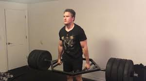

My Weight Lifting Journey
The Start
Depression and Obsession
My First Routine
College Demotivation
Lifting Basics
Semi-Pro Football
So the Season is Over
"Regret. Regret.. Regret..."
The Big 202
The Start of A Lifetime of Health
The Start
At the very beginning, I was around 150 lbs my freshman through junior years of highschool.
I was very small and I would say I had a slight skinny fat build heading into my junior year.
Outside of school I played sports with my buddies and was very active but my diet was atrocious.
It was around my sophmore year where I noticed muscle, fat, and the athleticism of others.
St. Clair Turf and Field
Depression and Obsession
At this point roughly towards the end of my first semester of high school. I realized I was pushing towards
186 lbs. This is the highest recorded weight to this point of my life and the worst body fat to muslce ratio
I have ever noticed. Not only did I notice but so did others. I had never struggled with my weight but getting a job
and eating out all the time had finally taken its toll. I decided enough was enough and right after covid-19, I finally
made a change in march of 2020.

25% Body Fat
My First Routine
I started my journey towards losing weight and it was very successful and by the time of graduation I was
169 lbs which happened to be my lowest weight since my junior year. I ran 6 miles every day, 3 miles to my bestfriends house
and 3 miles back. Also with landscaping and a caloric deficit i was fitting clothes better and feeling much better.
The Great Outdoors
College Demotivation
As all good things appear they will come to an end, at least that's how I felt when college started and my weight
went up as I lifted less and less until my weight was back up to 181. I was shattered, felt defeated, and almsot felt
into a downward spiral as I believed the weight was destined to always increase. College had begun and my weight
increased, I was doing excellent in my classes but did not have as much time as I did to diet and be as active.
Although things felt rough and desperate times were reached, I pulled myself out of slump and had an action plan.
East Central Community College (ECC)
Lifting Basics
My lifitng journey finally begins, after losing weight, gaining weight back, and losing weight again with a calorie
deficit and exercise I eventually take a step in the right direction. I began to lift 6 days a week, with Fridays off.
I never missed a single day for 8 straight months a prioritized it over hanging out with people, and made sure I lifted
and got a bit of cardio in each day. If it meant not hanging out after a long day I was mentally okay and physically was
able to go days without the normal "fun" associated with others. But I was okay with that and made a ton of progress getting my muslce to fat ratio or
(Body Fat Percentage) to an all time low at 170 lbs.
Priority Fitness (gym where it all started)
Semi-Pro Football
As January of 2022 hits, I am 150 lbs the lowest in the last 5 years of my life, and the greatest shape of my entire life.
I was strong, lean, built, and very well conditioned. Me and my buddies joined a flag tourney and at the very end of the game
a coach named Patrick Hunter came up to me and offered me a spot on his Semi-Pro team. I was hesitant but accepted. I did not dissapoint
and joined the 2022 for the Franklin County Falcons. It kept me in tip top shape with practices, games, and drills every week.
On top of that I continued to lift 6 days a week while attending college as well. Safe to say I was at a level of performance I could only dream of.
Franklin County Falcons (I am pictured as #12) [2022]
So the Season is Over
At this point my first football season was under wraps and we had just lost in the 2nd round of the playoffs to the
Missouri Warriors. I didn't fret or panic, I turned from my original gym and joined the YMCA. Here I lifted with teammates, played pickup basketball two nights a week,
and used the sauna to sweat out some weight. I was going on 10 months of consecutive lifting. I came to the YMCA on Mondays and Thursdays at night for community
pick up games. At this point in my weight loss, and lifting career I had been more aesthetic than I thought was possible for myself.
I finally graduated East Central College with my Associates and had stunning graduation transformtion pictures to motivate others to lift.
Washington Missouri Local YMCA
"Regret. Regret.. Regret..."
After football, lifitng, the YMCA, Priority Fitness, basketball, and college I got very lazy and burnt out. I was landscaping
all summer and was slowly missing trips to the gym. Overtime, it killed my progress and little breaks turned into a one month and a half break from
even touching any weights. Although I did exercise a little bit and get some cardio in all the food I was eating was turning into fat and my muscles were being covered
up from the food and I got weaker, and heavier. I was ashamed which kept me from going to the gym and putting on clothes that were tight.
It was time to get back to work and turn my weight gain in a muscle gain. Instead of hanging out at Lions Lake with the gang all the time,
I got back up and went back to what I knew best.
Lions Lake, Washington Mo.
The Big 202
After my terrible regret I was able to achieve the impossible. I was able to bulk all the way to 202 lbs at only 5'8".
I started lifting with buddies but gave myself I well earned break and went from a heavy work load of six days to four days of lifting a week.
This is so I wouldn't get burnt out or over train my body to the point where I would get burnt out. Doing this I was
able to tap into my true potential and figured out I could bench 215 lbs, squat 275 lbs, and most importantly
deadlift 365 lbs. This was the most weight for each exercise I have ever lifted not only did my strength go up but so did my muscle
leaving me with a greater sense of how lifting, dieting, and exercising work as a whole.

365 lb deadlift
The Start of A Lifetime of Health
As I look forward past my current weight and future weight. I dive deep into my own mind and body to try
and invision what exactly is in store for me and my fitness journey and long road to a healthy lifestyle. I see
my last goal as getting abs which I have suprisingly not yet achieved. In the meantime I will continue to set a high example
and friendly environment in my gym and towards others around me, and I one day hope to help guide others to a life of fitness, fun, and overall better Health.
Comparison From Bulk to Lean
© 2022 Logan Hanley